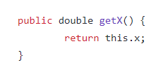
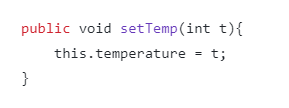

Encapsulation is one of the four principles of OOP. It means to restrict access to fields or methods to only what the programmer has allowed. This is done by setting the access level of fields, methods, or classes. There are 3 access keywords: public, protected, and private. Public is visible to the world, protected is visible within the class and any derived classes and private is visible within the class only. When access level is omitted, the field or variable is visible only to classes within the same folder or package.
Fields will contain data either as primitive types or as other abstract datatypes. Fields are always private or protected by encapsulation principles. A class can have a varying number of fields depending on its purpose.
These can also be called "getter" and "setter" methods. They are almost always included in a class and allow the user or other class to see and change the value of a field in a controlled manner. Getter methods will be return methods. They will provide a copy of the value in the desired field. Generally, each field would get a getter method. Setter methods are void. They will update the value of a field with a value passed into the method as an argument. Only fields that need their values updated from an external source will need a setter method.
This is an example of a getter/accessor method that returns the value of variable x.

This is an example of a setter/mutator method that changes the value of the temperature variable to the parameter t.

Other methods that have other functions or provide ways to interact with other objects can be added to a class. Access to other methods in the class would require parameters. If the object wants to interact with another object, the method needs to have a parameter where the object being interacted with can be passed.
Rather than belonging to an instance of a class, static methods belong to the class. They are called by referencing the class rather than from an instance. These are useful for performing functions that need to be done at a program level rather than at an instance level.